Introdução
Os exemplos que seram apresentados visam mostrar como o processamento digital de imagens usando OpenCV pode ser útil. Para podermos compilar os códigos, será necessário o arquivo contendo o código-fonte a ser compilado e um arquivo contendo regras de compilação na forma de um Makefile(Clique no link para baixar o arquivo), que deve estar no mesmo diretório aonde o código a ser compilado se encontra.
Manipulando pixels em uma imagem
No primeiro exercício, pede-se para o programa solicitar ao usuário as coordenadas de dois pontos(P1 e P2),
que deverão estar localizados dentro dos limites da imagem, e o programa tem que retornar a imagem original,
entretanto a região definida pelo retângulo de vértices opostos definidos pelos pontos P1 e P2 deverá mostrar
o negativo da imagem original na região correspondente.
A solução do problema é mostrada a seguir:
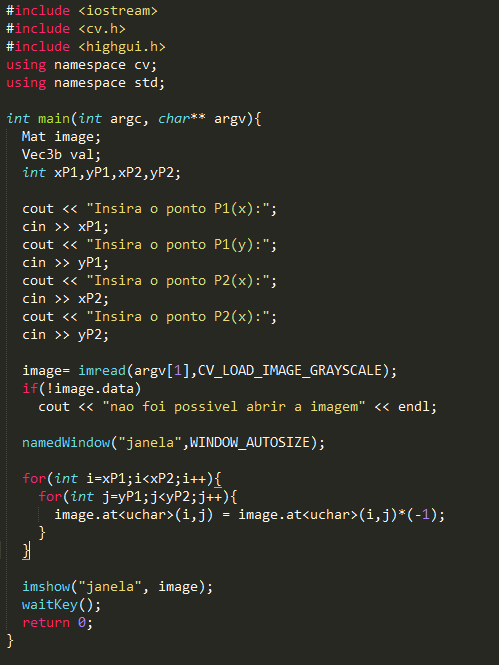
Download do código: regions.cpp
Para compilar e executar o programa, salve-o juntamente com o arquivo Makefile e a imagem em um diretório e execute
a seguinte seqüência de comandos no terminal:
$ make regions
$ ./regions nome_da_imagem.png
Antes: Depois:
 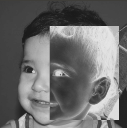
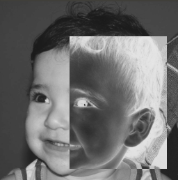
Na segunda parte do exercício, é solicitado que implemente um algoritmo que troque as regiões de uma imagem como se
fosse um quebra-cabeça, pediu-se ainda que nesse algoritmo fosse ultilizado alguns construtores da classe Mat. O algoritmo
desenvolvido é mostrado a seguir:
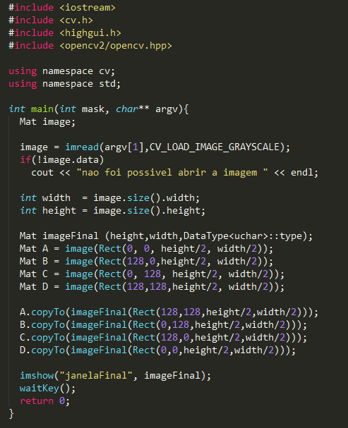
Download do código: trocaregioes.cpp
Para compilar e executar o programa, salve-o juntamente com o arquivo Makefile e a imagem em um diretório e execute
a seguinte seqüência de comandos no terminal:
$ make trocaregioes
$ ./trocaregioes nome_da_imagem.png
Antes: Depois:
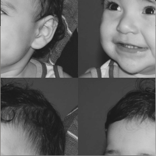
Preenchendo regiões
No programa labeling.cpp que é fornecido, percebe-se que ele preenche os objetos
com tons de cinza diferentes, porém os tons de cinza variam de 0 à 255, causando um problema quando tiver mais de 256
elementos no imagem, a primeira parte do exercício pede para achar uma solução para este problema. A solução encontrada
é passar o módulo da quantidade de elementos na função floodFill, nesse caso quando chegar em 256 elementos ele ira resetar
o valor e nunca irá passar de 255 na tom fornecido para preencimento dos elementos.
A parte do código que será diferente do labeling.cpp está apresentado a seguir:
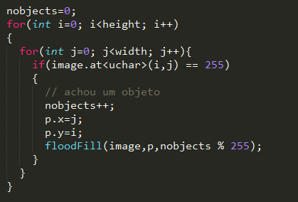
Na segunda parte do exercício, é solicitado que implemente um algoritmo para contar o números de elementos com e sem buracos de
uma imagem, que possui apenas duas cores: preto(plano de fundo) e branco(elemento). Assumindo que elementos com mais
de um buraco podem existir e ainda pediu para desconsiderar os elementos que tocam a borda da imagem.
Primeiro passo é remover os elementos quem tocam as bordas da imagem, para isso é necessário aplicar uma margem de 1 pixel
de cor branca, e depois aplicar o floodFill no primeiro pixel da imagem. Este procedimento irá preencher toda a margem e os
elementos, que a tocam, de preto.
Após remover os elementos das bordas, aplica-se novamente o floodFill no primeiro pixel para o tom de cinza 1, para diferenciar
o plano de fundo dos buracos(que continuaram com tom de cinza 0). Depois disso, percorre-se a imagem, procurando-se por tons de
cinza igual a 255, e aplicando-se o floodFill para preencher todos os elementos com o tom de cinza 200(sem buracos), guardando em
uma variável a quantidade total de elementos.
O ultimo passo é encontrar os elementos com buracos, e como todos estão marcados como sem buracos, deve-se percorrer a imagem
e a cada iteração guardar o pixel anterior, e quando encontrar um pixel preto(buraco) aplicar o floodFill no pixel anterior para
para pintar o elemento com tom de cinza 100(com buraco), e adicionando em uma variável de quantidade de elementos com buraco sempre
que isso ocorrer. No final para saber o número de elementos sem buraco e só subtrair o total de elementos dos que possuem buraco.
O algoritmo modificado é mostrado a seguir:
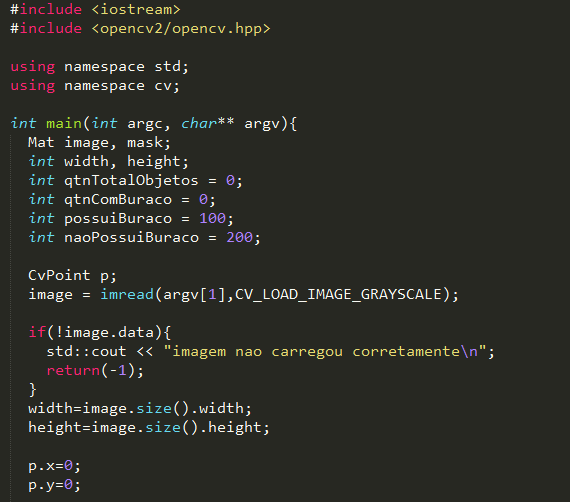
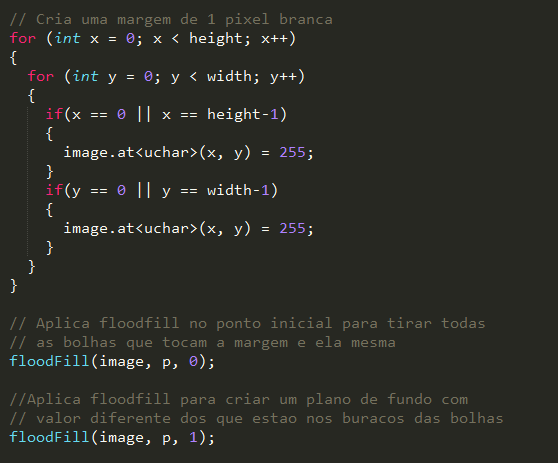
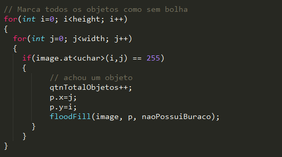
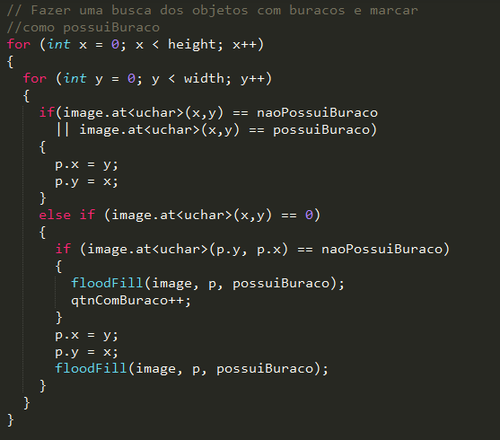
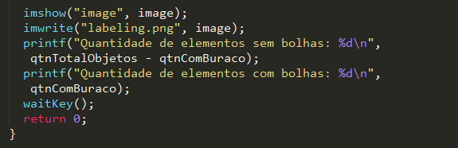
Download do código: labeling_modificado.cpp
Para compilar e executar o programa, salve-o juntamente com o arquivo Makefile e a imagem em um diretório e execute
a seguinte seqüência de comandos no terminal:
$ make labeling_modificado
$ ./labeling_modificado nome_da_imagem.png
Antes: Depois:
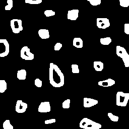 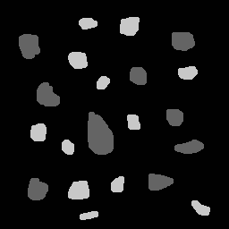
Console: Quantidade de elementos sem bolhas: 12
Quantidade de elementos com bolhas: 9
Manipulação de histogramas
No primeiro exercício deste tópico, pede-se para desenvolver um programa que realize a equalização, que é o processo
de espalhamento do histograma de uma imagem, o que gera um aumento no contraste e uma melhor distribuição do nível de
intensidade(brilho) das cores do que na imagem original.
O código fornecido (histograma) foi desenvolvido para captura de vídeo,
mas para demonstração usaremos uma imagem para
mostrar o efeito da equalização, porém o código de solução do exercício serve para vídeo como o original.
O código da solução é mostrado a seguir:
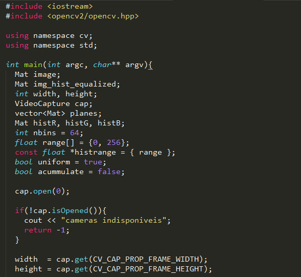
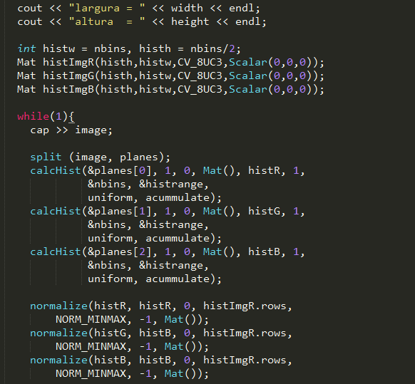
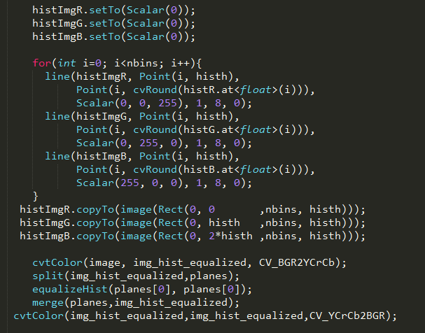
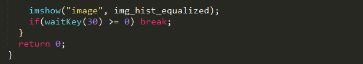
Download do código: equalize.cpp
Para compilar e executar o programa, salve-o juntamente com o arquivo Makefile em um diretório e execute
a seguinte seqüência de comandos no terminal:
$ make equalize
$ ./equalize
Imagem: Histograma:
Original: 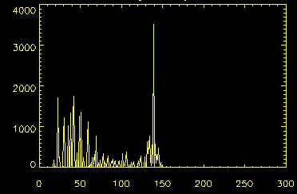
Equalizada:
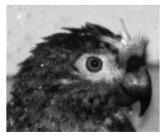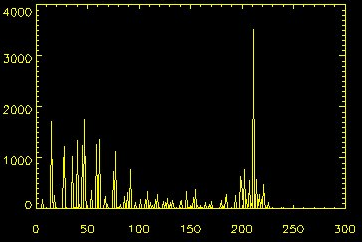
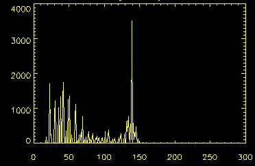
Equalizada:
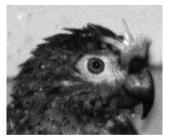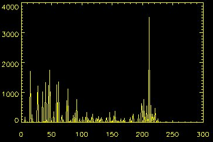
Na segunda parte do exercício, é solicitado que implemente um algoritmo que deverá continuamente calcular o histograma da imagem
e compará-lo com o último histograma calculado. Quando a diferença entre estes ultrapassar um limiar pré-estabelecido, deverá ser
mostrar um alarme(pintar de vermelho aonde houver movimento) ao usuário.
O algoritmo desenvolvido é mostrado a seguir:

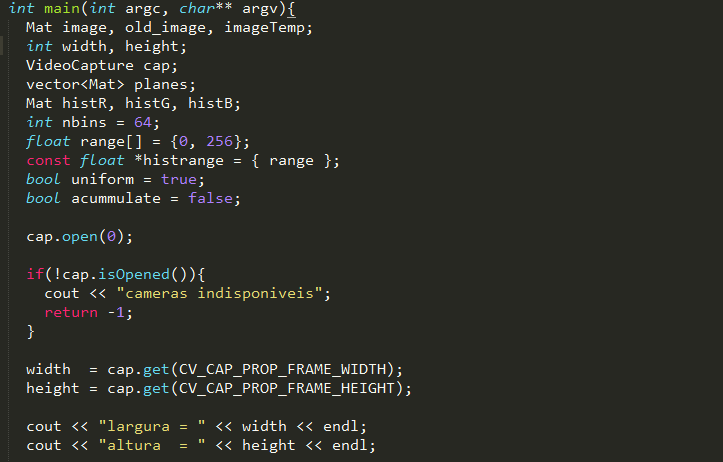
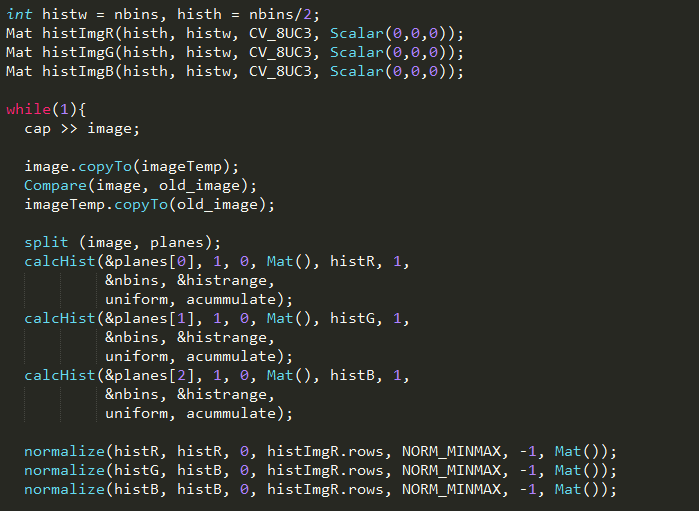
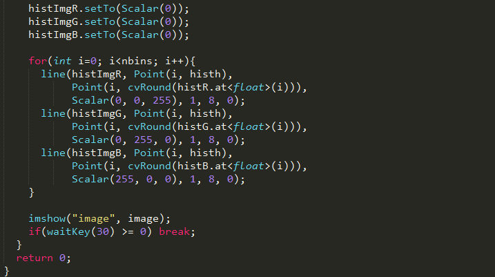
Download do código: motiondetector.cpp
Para compilar e executar o programa, salve-o juntamente com o arquivo Makefile em um diretório e execute
a seguinte seqüência de comandos no terminal:
$ make motiondetector
$ ./motiondetector
Sem movimento: Com movimento:
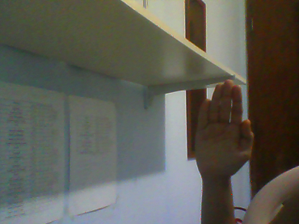 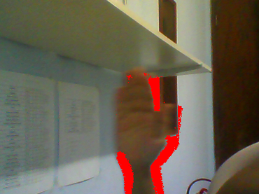Filtragem no domínio espacial
Neste tópico, o exercício pede para modificar o código fornecido filtroespacial para
que seja adicionado uma nova funcionalidade, que é o filtro laplaciano do gaussiano. Para isso foi usado a seguinte matriz como filtro:
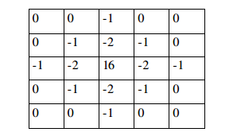
Neste caso as unicas modificações necessárias no código original são:
- Adicionar uma nova matriz para o filtro laplaciano do gaussiano.
- Adicionar um novo "case" no código para aplicar a nova matriz.
Essas alterações são mostradas a seguir:
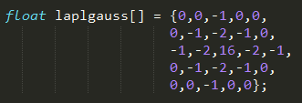 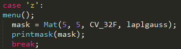
Download do código modificado: laplgauss.cpp
Para compilar e executar o programa, salve-o juntamente com o arquivo Makefile em um diretório e execute
a seguinte seqüência de comandos no terminal:
$ make laplgauss
$ ./laplgauss
Imagem original:
Imagem com Laplaciano:(Clicando H) 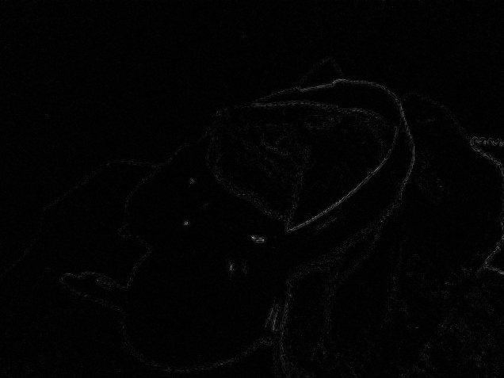
Imagem com Laplaciano do Gaussiano(Clicando Z): 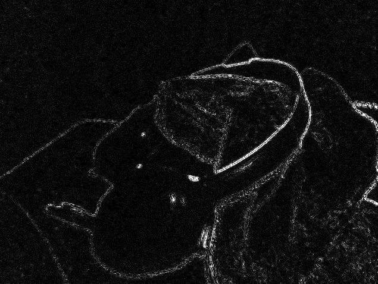